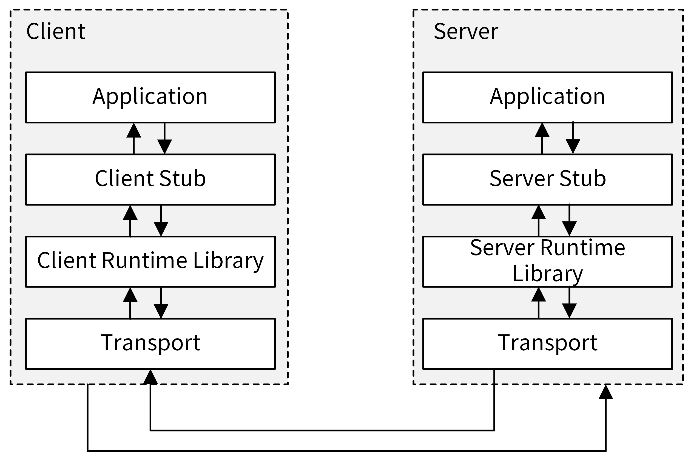
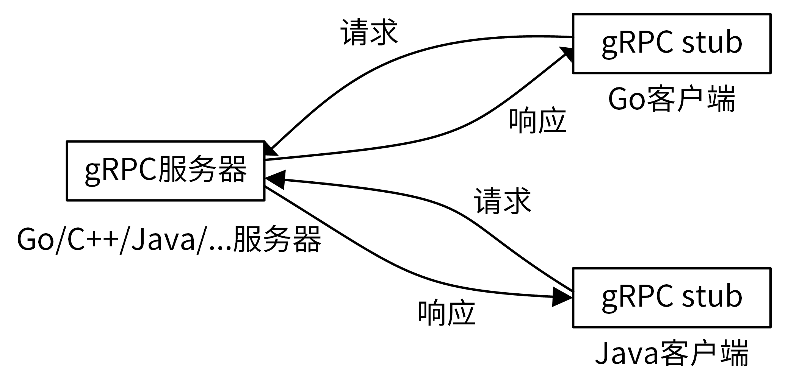
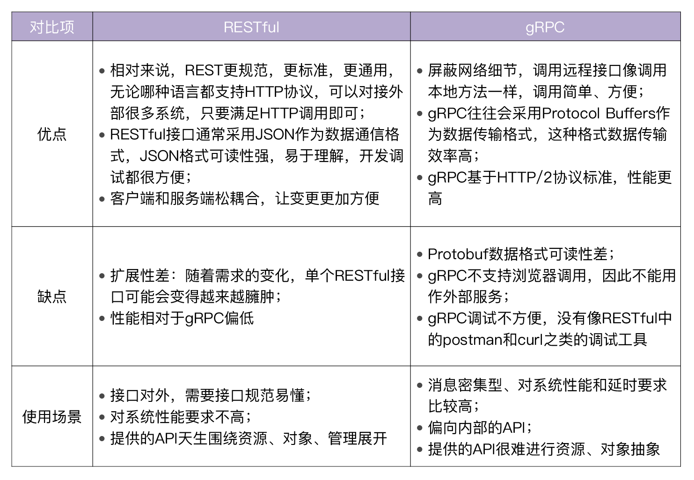
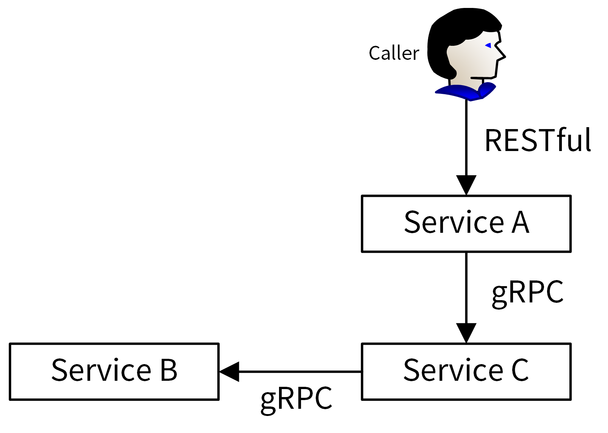

- 00 开篇词 从 0 开始搭建一个企业级 Go 应用.md.html
- 01 IAM系统概述：我们要实现什么样的 Go 项目？.md.html
- 02 环境准备：如何安装和配置一个基本的 Go 开发环境？.md.html
- 03 项目部署：如何快速部署 IAM 系统？.md.html
- 04 规范设计（上）：项目开发杂乱无章，如何规范？.md.html
- 05 规范设计（下）：commit 信息风格迥异、难以阅读，如何规范？.md.html
- 06 目录结构设计：如何组织一个可维护、可扩展的代码目录？.md.html
- 07 工作流设计：如何设计合理的多人开发模式？.md.html
- 08 研发流程设计（上）：如何设计 Go 项目的开发流程？.md.html
- 09 研发流程设计（下）：如何管理应用的生命周期？.md.html
- 10 设计方法：怎么写出优雅的 Go 项目？.md.html
- 11 设计模式：Go常用设计模式概述.md.html
- 12 API 风格（上）：如何设计RESTful API？.md.html
- 13 API 风格（下）：RPC API介绍.md.html
- 14 项目管理：如何编写高质量的Makefile？.md.html
- 15 研发流程实战：IAM项目是如何进行研发流程管理的？.md.html
- 16 代码检查：如何进行静态代码检查？.md.html
- 17 API 文档：如何生成 Swagger API 文档 ？.md.html
- 18 错误处理（上）：如何设计一套科学的错误码？.md.html
- 19 错误处理（下）：如何设计错误包？.md.html
- 20 日志处理（上）：如何设计日志包并记录日志？.md.html
- 21 日志处理（下）：手把手教你从 0 编写一个日志包.md.html
- 22 应用构建三剑客：Pflag、Viper、Cobra 核心功能介绍.md.html
- 23 应用构建实战：如何构建一个优秀的企业应用框架？.md.html
- 24 Web 服务：Web 服务核心功能有哪些，如何实现？.md.html
- 25 认证机制：应用程序如何进行访问认证？.md.html
- 26 IAM项目是如何设计和实现访问认证功能的？.md.html
- 27 权限模型：5大权限模型是如何进行资源授权的？.md.html
- 28 控制流（上）：通过iam-apiserver设计，看Web服务的构建.md.html
- 29 控制流（下）：iam-apiserver服务核心功能实现讲解.md.html
- 30 ORM：CURD 神器 GORM 包介绍及实战.md.html
- 31 数据流：通过iam-authz-server设计，看数据流服务的设计.md.html
- 32 数据处理：如何高效处理应用程序产生的数据？.md.html
- 33 SDK 设计（上）：如何设计出一个优秀的 Go SDK？.md.html
- 34 SDK 设计（下）：IAM项目Go SDK设计和实现.md.html
- 35 效率神器：如何设计和实现一个命令行客户端工具？.md.html
- 36 代码测试（上）：如何编写 Go 语言单元测试和性能测试用例？.md.html
- 37 代码测试（下）：Go 语言其他测试类型及 IAM 测试介绍.md.html
- 38 性能分析（上）：如何分析 Go 语言代码的性能？.md.html
- 39 性能分析（下）：API Server性能测试和调优实战.md.html
- 40 软件部署实战（上）：部署方案及负载均衡、高可用组件介绍.md.html
- 41 软件部署实战（中）：IAM 系统生产环境部署实战.md.html
- 42 软件部署实战（下）：IAM系统安全加固、水平扩缩容实战.md.html
- 43 技术演进（上）：虚拟化技术演进之路.md.html
- 44 技术演进（下）：软件架构和应用生命周期技术演进之路.md.html
- 45 基于Kubernetes的云原生架构设计.md.html
- 46 如何制作Docker镜像？.md.html
- 47 如何编写Kubernetes资源定义文件？.md.html
- 48 IAM 容器化部署实战.md.html
- 49 服务编排（上）：Helm服务编排基础知识.md.html
- 50 服务编排（下）：基于Helm的服务编排部署实战.md.html
- 51 基于 GitHub Actions 的 CI 实战.md.html
- 特别放送 Go Modules依赖包管理全讲.md.html
- 特别放送 Go Modules实战.md.html
- 特别放送 IAM排障指南.md.html
- 特别放送 分布式作业系统设计和实现.md.html
- 特别放送 给你一份Go项目中最常用的Makefile核心语法.md.html
- 特别放送 给你一份清晰、可直接套用的Go编码规范.md.html
- 直播加餐 如何从小白进阶成 Go 语言专家？.md.html
- 结束语 如何让自己的 Go 研发之路走得更远？.md.html
- 捐赠
13 API 风格（下）：RPC API介绍
你好，我是孔令飞。这一讲，我们继续来看下如何设计应用的API风格。
上一讲，我介绍了REST API风格，这一讲我来介绍下另外一种常用的API风格，RPC。在Go项目开发中，如果业务对性能要求比较高，并且需要提供给多种编程语言调用，这时候就可以考虑使用RPC API接口。RPC在Go项目开发中用得也非常多，需要我们认真掌握。
RPC介绍
根据维基百科的定义，RPC（Remote Procedure Call），即远程过程调用，是一个计算机通信协议。该协议允许运行于一台计算机的程序调用另一台计算机的子程序，而程序员不用额外地为这个交互作用编程。
通俗来讲，就是服务端实现了一个函数，客户端使用RPC框架提供的接口，像调用本地函数一样调用这个函数，并获取返回值。RPC屏蔽了底层的网络通信细节，使得开发人员无需关注网络编程的细节，可以将更多的时间和精力放在业务逻辑本身的实现上，从而提高开发效率。
RPC的调用过程如下图所示：

RPC调用具体流程如下：
- Client通过本地调用，调用Client Stub。
- Client Stub将参数打包（也叫Marshalling）成一个消息，然后发送这个消息。
- Client所在的OS将消息发送给Server。
- Server端接收到消息后，将消息传递给Server Stub。
- Server Stub将消息解包（也叫 Unmarshalling）得到参数。
- Server Stub调用服务端的子程序（函数），处理完后，将最终结果按照相反的步骤返回给 Client。
这里需要注意，Stub负责调用参数和返回值的流化（serialization）、参数的打包和解包，以及网络层的通信。Client端一般叫Stub，Server端一般叫Skeleton。
目前，业界有很多优秀的RPC协议，例如腾讯的Tars、阿里的Dubbo、微博的Motan、Facebook的Thrift、RPCX，等等。但使用最多的还是gRPC，这也是本专栏所采用的RPC框架，所以接下来我会重点介绍gRPC框架。
gRPC介绍
gRPC是由Google开发的高性能、开源、跨多种编程语言的通用RPC框架，基于HTTP 2.0协议开发，默认采用Protocol Buffers数据序列化协议。gRPC具有如下特性：
- 支持多种语言，例如 Go、Java、C、C++、C#、Node.js、PHP、Python、Ruby等。
- 基于IDL（Interface Definition Language）文件定义服务，通过proto3工具生成指定语言的数据结构、服务端接口以及客户端Stub。通过这种方式，也可以将服务端和客户端解耦，使客户端和服务端可以并行开发。
- 通信协议基于标准的HTTP/2设计，支持双向流、消息头压缩、单TCP的多路复用、服务端推送等特性。
- 支持Protobuf和JSON序列化数据格式。Protobuf是一种语言无关的高性能序列化框架，可以减少网络传输流量，提高通信效率。
这里要注意的是，gRPC的全称不是golang Remote Procedure Call，而是google Remote Procedure Call。
gRPC的调用如下图所示：

在gRPC中，客户端可以直接调用部署在不同机器上的gRPC服务所提供的方法，调用远端的gRPC方法就像调用本地的方法一样，非常简单方便，通过gRPC调用，我们可以非常容易地构建出一个分布式应用。
像很多其他的RPC服务一样，gRPC也是通过IDL语言，预先定义好接口（接口的名字、传入参数和返回参数等）。在服务端，gRPC服务实现我们所定义的接口。在客户端，gRPC存根提供了跟服务端相同的方法。
gRPC支持多种语言，比如我们可以用Go语言实现gRPC服务，并通过Java语言客户端调用gRPC服务所提供的方法。通过多语言支持，我们编写的gRPC服务能满足客户端多语言的需求。
gRPC API接口通常使用的数据传输格式是Protocol Buffers。接下来，我们就一起了解下Protocol Buffers。
Protocol Buffers介绍
Protocol Buffers（ProtocolBuffer/ protobuf）是Google开发的一套对数据结构进行序列化的方法，可用作（数据）通信协议、数据存储格式等，也是一种更加灵活、高效的数据格式，与XML、JSON类似。它的传输性能非常好，所以常被用在一些对数据传输性能要求比较高的系统中，作为数据传输格式。Protocol Buffers的主要特性有下面这几个。
- 更快的数据传输速度：protobuf在传输时，会将数据序列化为二进制数据，和XML、JSON的文本传输格式相比，这可以节省大量的IO操作，从而提高数据传输速度。
- 跨平台多语言：protobuf自带的编译工具 protoc 可以基于protobuf定义文件，编译出不同语言的客户端或者服务端，供程序直接调用，因此可以满足多语言需求的场景。
- 具有非常好的扩展性和兼容性，可以更新已有的数据结构，而不破坏和影响原有的程序。
- 基于IDL文件定义服务，通过proto3工具生成指定语言的数据结构、服务端和客户端接口。
在gRPC的框架中，Protocol Buffers主要有三个作用。
第一，可以用来定义数据结构。举个例子，下面的代码定义了一个SecretInfo数据结构：
// SecretInfo contains secret details.
message SecretInfo {
string name = 1;
string secret_id = 2;
string username = 3;
string secret_key = 4;
int64 expires = 5;
string description = 6;
string created_at = 7;
string updated_at = 8;
}
第二，可以用来定义服务接口。下面的代码定义了一个Cache服务，服务包含了ListSecrets和ListPolicies 两个API接口。
// Cache implements a cache rpc service.
service Cache{
rpc ListSecrets(ListSecretsRequest) returns (ListSecretsResponse) {}
rpc ListPolicies(ListPoliciesRequest) returns (ListPoliciesResponse) {}
}
第三，可以通过protobuf序列化和反序列化，提升传输效率。
gRPC示例
我们已经对gRPC这一通用RPC框架有了一定的了解，但是你可能还不清楚怎么使用gRPC编写API接口。接下来，我就通过gRPC官方的一个示例来快速给大家展示下。运行本示例需要在Linux服务器上安装Go编译器、Protocol buffer编译器（protoc，v3）和 protoc 的Go语言插件，在 02讲 中我们已经安装过，这里不再讲具体的安装方法。
这个示例分为下面几个步骤：
- 定义gRPC服务。
- 生成客户端和服务器代码。
- 实现gRPC服务。
- 实现gRPC客户端。
示例代码存放在gopractise-demo/apistyle/greeter目录下。代码结构如下：
$ tree
├── client
│ └── main.go
├── helloworld
│ ├── helloworld.pb.go
│ └── helloworld.proto
└── server
└── main.go
client目录存放Client端的代码，helloworld目录用来存放服务的IDL定义，server目录用来存放Server端的代码。
下面我具体介绍下这个示例的四个步骤。
- 定义gRPC服务。
首先，需要定义我们的服务。进入helloworld目录，新建文件helloworld.proto：
$ cd helloworld
$ vi helloworld.proto
内容如下：
syntax = "proto3";
option go_package = "github.com/marmotedu/gopractise-demo/apistyle/greeter/helloworld";
package helloworld;
// The greeting service definition.
service Greeter {
// Sends a greeting
rpc SayHello (HelloRequest) returns (HelloReply) {}
}
// The request message containing the user's name.
message HelloRequest {
string name = 1;
}
// The response message containing the greetings
message HelloReply {
string message = 1;
}
在helloworld.proto定义文件中，option关键字用来对.proto文件进行一些设置，其中go_package是必需的设置，而且go_package的值必须是包导入的路径。package关键字指定生成的.pb.go文件所在的包名。我们通过service关键字定义服务，然后再指定该服务拥有的RPC方法，并定义方法的请求和返回的结构体类型：
service Greeter {
// Sends a greeting
rpc SayHello (HelloRequest) returns (HelloReply) {}
}
gRPC支持定义4种类型的服务方法，分别是简单模式、服务端数据流模式、客户端数据流模式和双向数据流模式。
简单模式（Simple RPC）：是最简单的gRPC模式。客户端发起一次请求，服务端响应一个数据。定义格式为rpc SayHello (HelloRequest) returns (HelloReply) {}。
服务端数据流模式（Server-side streaming RPC）：客户端发送一个请求，服务器返回数据流响应，客户端从流中读取数据直到为空。定义格式为rpc SayHello (HelloRequest) returns (stream HelloReply) {}。
客户端数据流模式（Client-side streaming RPC）：客户端将消息以流的方式发送给服务器，服务器全部处理完成之后返回一次响应。定义格式为rpc SayHello (stream HelloRequest) returns (HelloReply) {}。
双向数据流模式（Bidirectional streaming RPC）：客户端和服务端都可以向对方发送数据流，这个时候双方的数据可以同时互相发送，也就是可以实现实时交互RPC框架原理。定义格式为rpc SayHello (stream HelloRequest) returns (stream HelloReply) {}。
本示例使用了简单模式。.proto文件也包含了Protocol Buffers 消息的定义，包括请求消息和返回消息。例如请求消息：
// The request message containing the user's name.
message HelloRequest {
string name = 1;
}
- 生成客户端和服务器代码。
接下来，我们需要根据.proto服务定义生成gRPC客户端和服务器接口。我们可以使用protoc编译工具，并指定使用其Go语言插件来生成：
$ protoc -I. --go_out=plugins=grpc:$GOPATH/src helloworld.proto
$ ls
helloworld.pb.go helloworld.proto
你可以看到，新增了一个helloworld.pb.go文件。
- 实现gRPC服务。
接着，我们就可以实现gRPC服务了。进入server目录，新建main.go文件：
$ cd ../server
$ vi main.go
main.go内容如下：
// Package main implements a server for Greeter service.
package main
import (
"context"
"log"
"net"
pb "github.com/marmotedu/gopractise-demo/apistyle/greeter/helloworld"
"google.golang.org/grpc"
)
const (
port = ":50051"
)
// server is used to implement helloworld.GreeterServer.
type server struct {
pb.UnimplementedGreeterServer
}
// SayHello implements helloworld.GreeterServer
func (s *server) SayHello(ctx context.Context, in *pb.HelloRequest) (*pb.HelloReply, error) {
log.Printf("Received: %v", in.GetName())
return &pb.HelloReply{Message: "Hello " + in.GetName()}, nil
}
func main() {
lis, err := net.Listen("tcp", port)
if err != nil {
log.Fatalf("failed to listen: %v", err)
}
s := grpc.NewServer()
pb.RegisterGreeterServer(s, &server{})
if err := s.Serve(lis); err != nil {
log.Fatalf("failed to serve: %v", err)
}
}
上面的代码实现了我们上一步根据服务定义生成的Go接口。
我们先定义了一个Go结构体server，并为server结构体添加SayHello(context.Context, pb.HelloRequest) (pb.HelloReply, error)方法，也就是说server是GreeterServer接口（位于helloworld.pb.go文件中）的一个实现。
在我们实现了gRPC服务所定义的方法之后，就可以通过 net.Listen(...) 指定监听客户端请求的端口；接着，通过 grpc.NewServer() 创建一个gRPC Server实例，并通过 pb.RegisterGreeterServer(s, &server{}) 将该服务注册到gRPC框架中；最后，通过 s.Serve(lis) 启动gRPC服务。
创建完main.go文件后，在当前目录下执行 go run main.go ，启动gRPC服务。
- 实现gRPC客户端。
打开一个新的Linux终端，进入client目录，新建main.go文件：
$ cd ../client
$ vi main.go
main.go内容如下：
// Package main implements a client for Greeter service.
package main
import (
"context"
"log"
"os"
"time"
pb "github.com/marmotedu/gopractise-demo/apistyle/greeter/helloworld"
"google.golang.org/grpc"
)
const (
address = "localhost:50051"
defaultName = "world"
)
func main() {
// Set up a connection to the server.
conn, err := grpc.Dial(address, grpc.WithInsecure(), grpc.WithBlock())
if err != nil {
log.Fatalf("did not connect: %v", err)
}
defer conn.Close()
c := pb.NewGreeterClient(conn)
// Contact the server and print out its response.
name := defaultName
if len(os.Args) > 1 {
name = os.Args[1]
}
ctx, cancel := context.WithTimeout(context.Background(), time.Second)
defer cancel()
r, err := c.SayHello(ctx, &pb.HelloRequest{Name: name})
if err != nil {
log.Fatalf("could not greet: %v", err)
}
log.Printf("Greeting: %s", r.Message)
}
在上面的代码中，我们通过如下代码创建了一个gRPC连接，用来跟服务端进行通信：
// Set up a connection to the server.
conn, err := grpc.Dial(address, grpc.WithInsecure(), grpc.WithBlock())
if err != nil {
log.Fatalf("did not connect: %v", err)
}
defer conn.Close()
在创建连接时，我们可以指定不同的选项，用来控制创建连接的方式，例如grpc.WithInsecure()、grpc.WithBlock()等。gRPC支持很多选项，更多的选项可以参考grpc仓库下dialoptions.go文件中以With开头的函数。
连接建立起来之后，我们需要创建一个客户端stub，用来执行RPC请求c := pb.NewGreeterClient(conn)。创建完成之后，我们就可以像调用本地函数一样，调用远程的方法了。例如，下面一段代码通过 c.SayHello 这种本地式调用方式调用了远端的SayHello接口：
r, err := c.SayHello(ctx, &pb.HelloRequest{Name: name})
if err != nil {
log.Fatalf("could not greet: %v", err)
}
log.Printf("Greeting: %s", r.Message)
从上面的调用格式中，我们可以看到RPC调用具有下面两个特点。
- 调用方便：RPC屏蔽了底层的网络通信细节，使得调用RPC就像调用本地方法一样方便，调用方式跟大家所熟知的调用类的方法一致：
ClassName.ClassFuc(params)。 - 不需要打包和解包：RPC调用的入参和返回的结果都是Go的结构体，不需要对传入参数进行打包操作，也不需要对返回参数进行解包操作，简化了调用步骤。
最后，创建完main.go文件后，在当前目录下，执行go run main.go发起RPC调用：
$ go run main.go
2020/10/17 07:55:00 Greeting: Hello world
至此，我们用四个步骤，创建并调用了一个gRPC服务。接下来我再给大家讲解一个在具体场景中的注意事项。
在做服务开发时，我们经常会遇到一种场景：定义一个接口，接口会通过判断是否传入某个参数，决定接口行为。例如，我们想提供一个GetUser接口，期望GetUser接口在传入username参数时，根据username查询用户的信息，如果没有传入username，则默认根据userId查询用户信息。
这时候，我们需要判断客户端有没有传入username参数。我们不能根据username是否为空值来判断，因为我们不能区分客户端传的是空值，还是没有传username参数。这是由Go语言的语法特性决定的：如果客户端没有传入username参数，Go会默认赋值为所在类型的零值，而字符串类型的零值就是空字符串。
那我们怎么判断客户端有没有传入username参数呢？最好的方法是通过指针来判断，如果是nil指针就说明没有传入，非nil指针就说明传入，具体实现步骤如下：
- 编写protobuf定义文件。
新建user.proto文件，内容如下:
syntax = "proto3";
package proto;
option go_package = "github.com/marmotedu/gopractise-demo/protobuf/user";
//go:generate protoc -I. --experimental_allow_proto3_optional --go_out=plugins=grpc:.
service User {
rpc GetUser(GetUserRequest) returns (GetUserResponse) {}
}
message GetUserRequest {
string class = 1;
optional string username = 2;
optional string user_id = 3;
}
message GetUserResponse {
string class = 1;
string user_id = 2;
string username = 3;
string address = 4;
string sex = 5;
string phone = 6;
}
你需要注意，这里我们在需要设置为可选字段的前面添加了optional标识。
- 使用protoc工具编译protobuf文件。
在执行protoc命令时，需要传入--experimental_allow_proto3_optional参数以打开optional选项，编译命令如下：
$ protoc --experimental_allow_proto3_optional --go_out=plugins=grpc:. user.proto
上述编译命令会生成user.pb.go文件，其中的GetUserRequest结构体定义如下：
type GetUserRequest struct {
state protoimpl.MessageState
sizeCache protoimpl.SizeCache
unknownFields protoimpl.UnknownFields
Class string `protobuf:"bytes,1,opt,name=class,proto3" json:"class,omitempty"`
Username *string `protobuf:"bytes,2,opt,name=username,proto3,oneof" json:"username,omitempty"`
UserId *string `protobuf:"bytes,3,opt,name=user_id,json=userId,proto3,oneof" json:"user_id,omitempty"`
}
通过 optional + --experimental_allow_proto3_optional 组合，我们可以将一个字段编译为指针类型。
- 编写gRPC接口实现。
新建一个user.go文件，内容如下：
package user
import (
"context"
pb "github.com/marmotedu/api/proto/apiserver/v1"
"github.com/marmotedu/iam/internal/apiserver/store"
)
type User struct {
}
func (c *User) GetUser(ctx context.Context, r *pb.GetUserRequest) (*pb.GetUserResponse, error) {
if r.Username != nil {
return store.Client().Users().GetUserByName(r.Class, r.Username)
}
return store.Client().Users().GetUserByID(r.Class, r.UserId)
}
总之，在GetUser方法中，我们可以通过判断r.Username是否为nil，来判断客户端是否传入了Username参数。
RESTful VS gRPC
到这里，今天我们已经介绍完了gRPC API。回想一下我们昨天学习的RESTful API，你可能想问：这两种API风格分别有什么优缺点，适用于什么场景呢？我把这个问题的答案放在了下面这张表中，你可以对照着它，根据自己的需求在实际应用时进行选择。

当然，更多的时候，RESTful API 和gRPC API是一种合作的关系，对内业务使用gRPC API，对外业务使用RESTful API，如下图所示：

总结
在Go项目开发中，我们可以选择使用 RESTful API 风格和 RPC API 风格，这两种服务都用得很多。其中，RESTful API风格因为规范、易理解、易用，所以适合用在需要对外提供API接口的场景中。而RPC API因为性能比较高、调用方便，更适合用在内部业务中。
RESTful API使用的是HTTP协议，而RPC API使用的是RPC协议。目前，有很多RPC协议可供你选择，而我推荐你使用gRPC，因为它很轻量，同时性能很高、很稳定，是一个优秀的RPC框架。所以目前业界用的最多的还是gRPC协议，腾讯、阿里等大厂内部很多核心的线上服务用的就是gRPC。
除了使用gRPC协议，在进行Go项目开发前，你也可以了解业界一些其他的优秀Go RPC框架，比如腾讯的tars-go、阿里的dubbo-go、Facebook的thrift、rpcx等，你可以在项目开发之前一并调研，根据实际情况进行选择。
课后练习
- 使用gRPC包，快速实现一个RPC API服务，并实现PrintHello接口，该接口会返回“Hello World”字符串。
- 请你思考这个场景：你有一个gRPC服务，但是却希望该服务同时也能提供RESTful API接口，这该如何实现？
期待在留言区看到你的思考和答案，也欢迎和我一起探讨关于RPC API相关的问题，我们下一讲见！
© 2019 - 2023 Liangliang Lee. Powered by gin and hexo-theme-book.